Southern Chivalry: Argument versus Club's. Lithograph after John L. Magee, 1856. Wikimedia Commons (public domain).
Recap · Chapter 13
Where Chapter 13 Left Off
The Compromise of 1850 postponed the crisis. It did not settle who would decide about slavery in the West.
California entered as a free state.
Free states now outnumbered slave states in the Senate.
Utah and New Mexico got popular sovereignty.
Settlers there would decide about slavery.
The Fugitive Slave Act angered the North.
Crowds in Boston and Syracuse defied it.
Uncle Tom's Cabin (1852) reached millions.
It made slavery a moral question for Northern readers.
Lecture 1 · Part I
A Railroad Bill Breaks the Parties
1854–1855
Part I · The Kansas-Nebraska bill
Douglas Wanted a Railroad Through Chicago
- January 1854: Senator Stephen A. Douglas of Illinois proposed organizing the land west of Missouri and Iowa
- He wanted settlers there, and a railroad to the Pacific that started in Chicago
- Southern senators wanted a chance for slavery in the new land
His answer was : the settlers of Kansas and Nebraska would vote on slavery
Stephen A. Douglas, between 1855 and 1861. Brady-Handy Collection, Library of Congress, via Wikimedia Commons (public domain).
The Missouri Line Was Erased
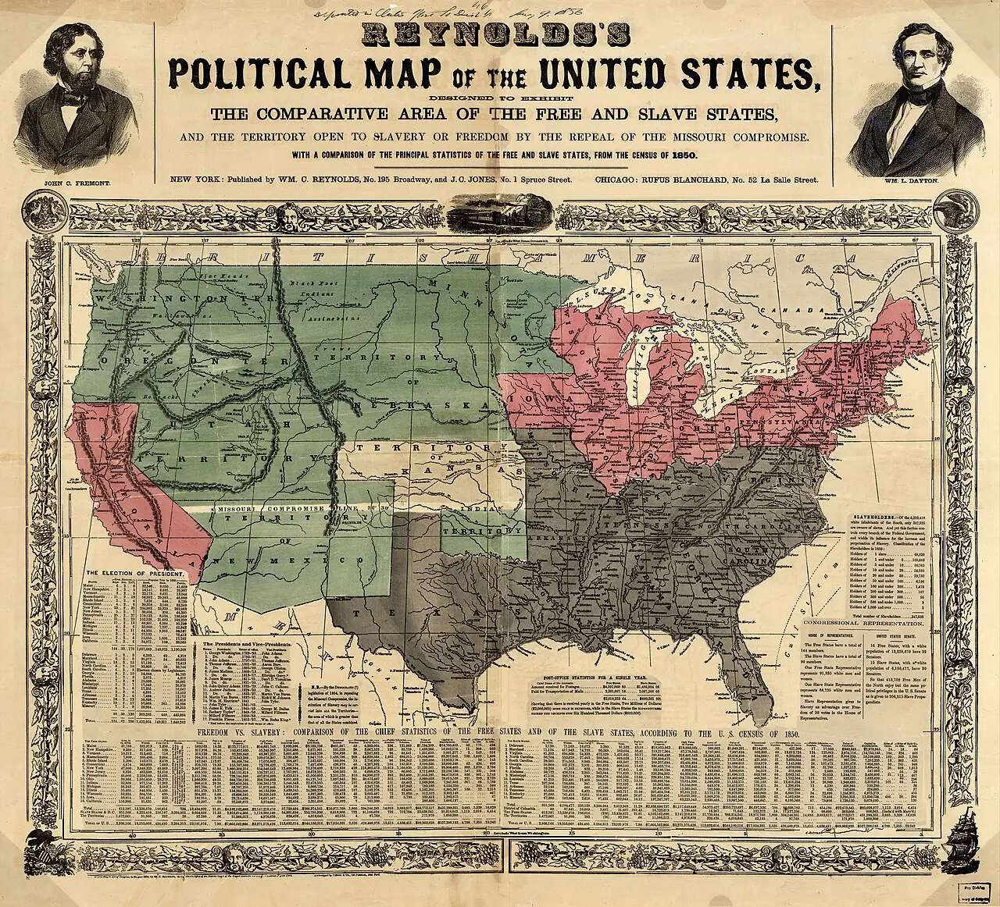
- Since 1820 the Missouri Compromise had banned slavery north of 36°30′ in the Louisiana Purchase
- Kansas and Nebraska lay north of that line
- May 30, 1854: President Franklin Pierce signed the Kansas-Nebraska Act
Many Northerners felt a promise kept for 34 years had been broken.
Anti-Nebraska Anger Destroyed the Whigs
A split vote
Northern Whigs voted against the act; most Southern Whigs voted for it
A party without one voice
The party could no longer speak with one voice about slavery
Anger in the North
Angry Northerners held "Anti-Nebraska" meetings across the North
By 1856 the Whigs had vanished as a national party
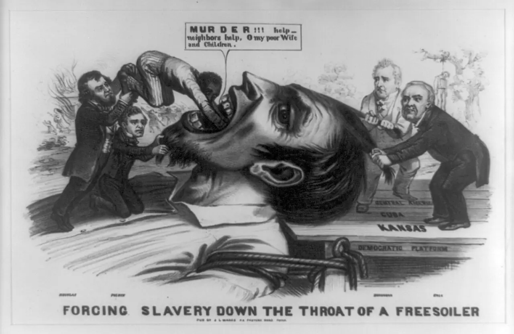
Four Million Newcomers Arrived, 1840–1860
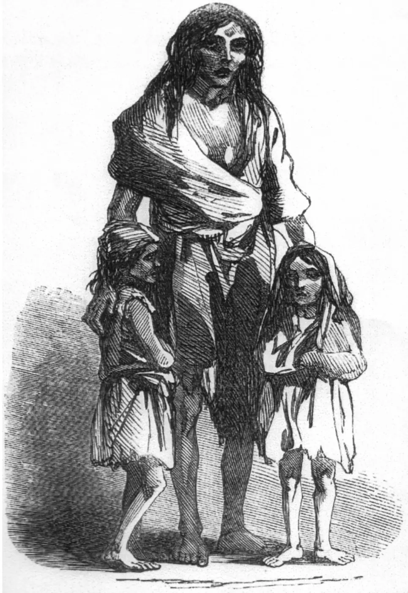
More than four million immigrants arrived, most from Ireland and the German states
Over a million Irish fled the Great Famine (1845–1852)
Germans came to escape hard times and a failed revolution in 1848
By 1860 about 13 percent of Americans were born abroad
The Know-Nothings Promised to Stop Them
Officially the American Party: anti-immigrant and anti-Catholic, a movement called
- They wanted a 21-year wait for citizenship and only native-born officeholders
- 1854–1855: they won control of Massachusetts and sent dozens of members to Congress
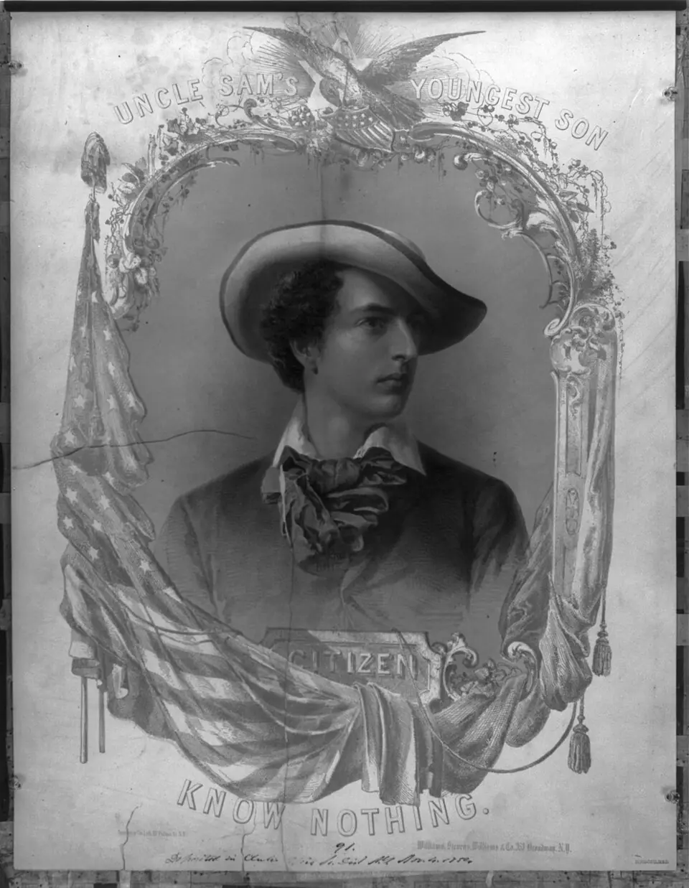
Republicans Organized Around Free Soil
1854: Anti-Nebraska meetings in Ripon, Wisconsin, and Jackson, Michigan, used the name "Republican"
Members:
Their creed was
The first major party with no Southern wing
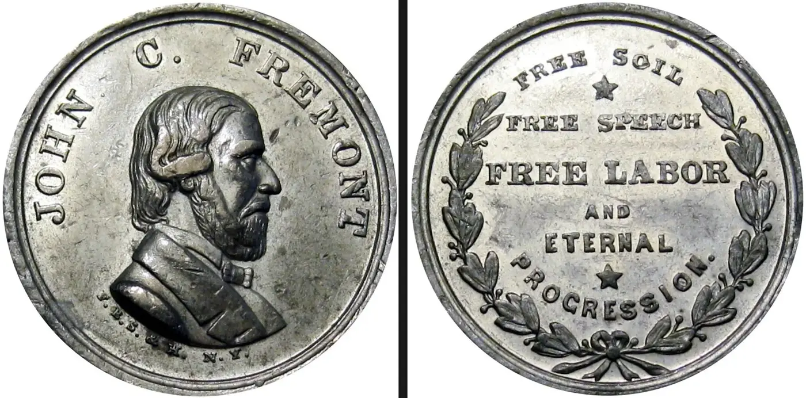
Lecture 1 · Student Activity
⏸ It Is 1855. Where Does Your Vote Go?
You are a Northern Whig. Your party is dying. You dislike the Kansas-Nebraska Act, and your town is filling with Irish immigrants. Do you join the Know-Nothings or the Republicans?
- Decide on your own: which party gets your vote?
- Turn to a partner and give one reason from today's lecture.
- Be ready to share: what would make you switch?
⏸ 3 minutes
Lecture 1 · Part II
Kansas Bleeds
1854–1856
Settlers and Border Ruffians Raced for Kansas
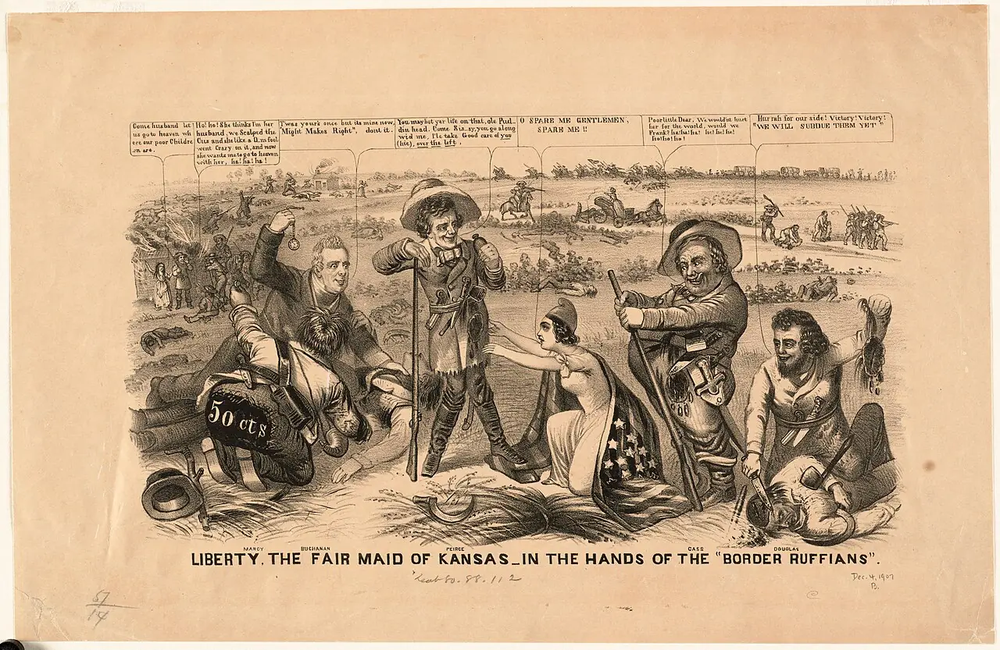
From the North
Free-state settlers poured in from the North; some were sent by the New England Emigrant Aid Company
From Missouri
March 1855: thousands of crossed from Missouri to vote illegally
- The fraud elected a proslavery legislature; free-staters wrote their own Topeka Constitution
- By 1856 Kansas had two rival governments; President Pierce backed the proslavery one
Lawrence Was Sacked, and John Brown Answered
- May 21, 1856a proslavery posse sacked the free-state town of Lawrence
- They burned the Free State Hotel and wrecked two newspaper presses
- May 24–25John Brown and his men killed five proslavery settlers at Pottawatomie Creek
Guerrilla war followed; historians count roughly 55 to 200 deaths, depending on how they count
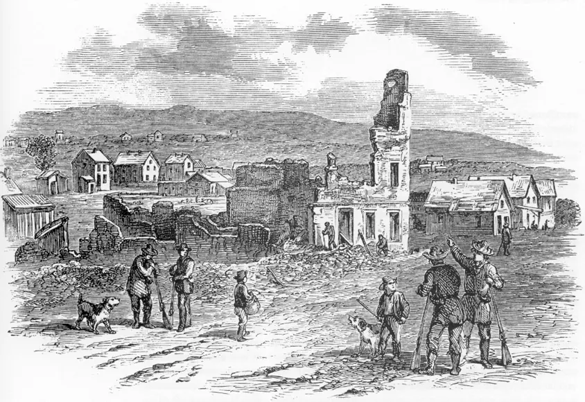
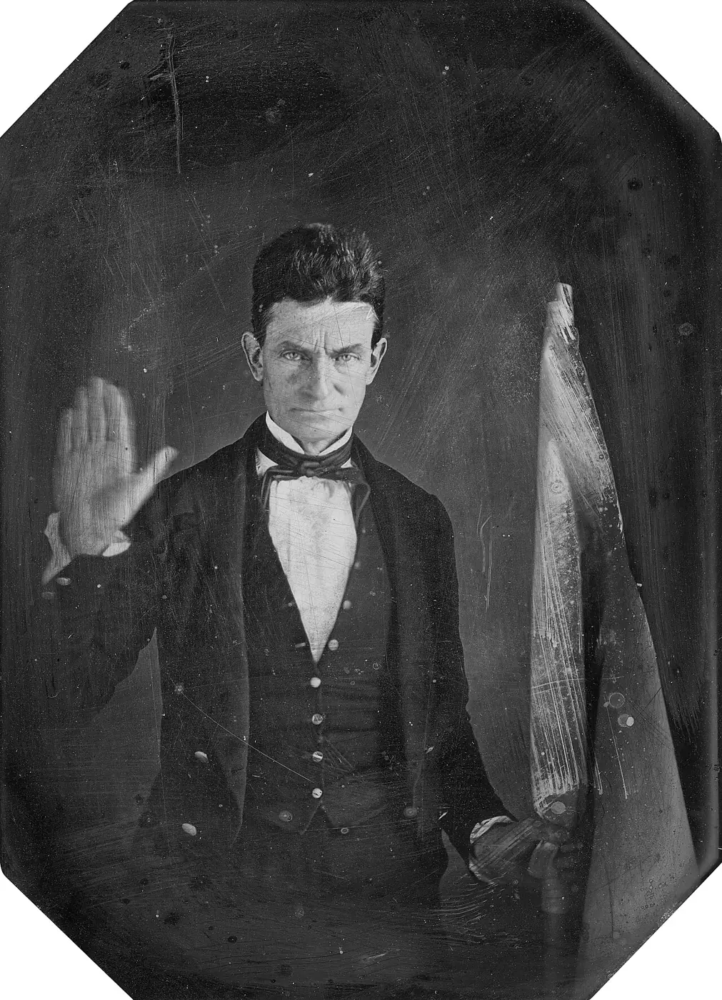
Short documentary · 1:33
The Pottawatomie Massacre: A True Story
Brooks Caned Sumner on the Senate Floor
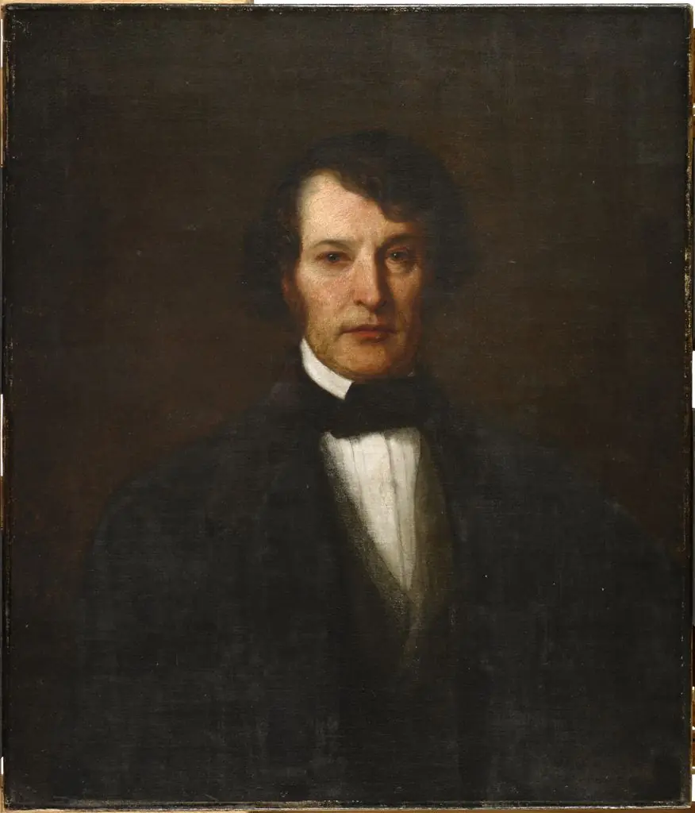
- May 19–20, 1856Sumner's speech "The Crime Against Kansas" mocked Senator Andrew Butler of South Carolina
- May 22Representative Preston Brooks, Butler's relative, beat Sumner with a cane until it broke
North and South
Many Northerners saw proof of Southern brutality; many white Southerners sent Brooks new canes
The injury
Sumner's injuries kept him from his Senate work, except for brief visits, until December 1859
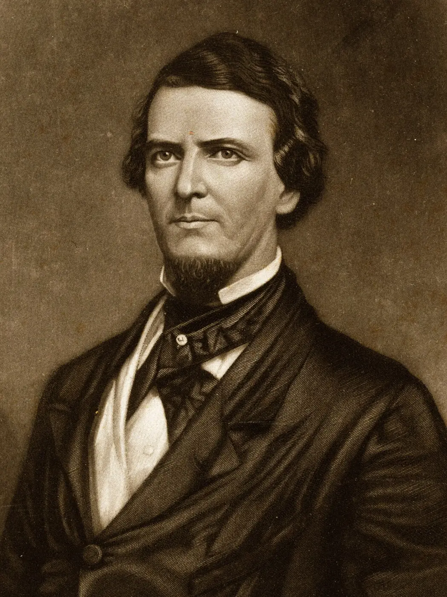
Buchanan Won, but Republicans Nearly Took the North
Democrats
James Buchanan, who had been in Britain during the Kansas fight
Republicans
John C. Frémont, "Free Soil, Free Speech, Free Men, Frémont"
American Party
former president Millard Fillmore
Buchanan: 174 electoral votes; Frémont won 11 of the 16 free states
A party with no Southern voters had come within reach of the White House.
![Map of the presidential election of 1856 by state. Buchanan, the Democrat, won 19 states with 174 electoral votes: every slave state except Maryland (Alabama, Arkansas, Delaware, Florida, Georgia, Kentucky, Louisiana, Mississippi, Missouri, North Carolina, South Carolina, Tennessee, Texas, Virginia), plus the free states of California, Illinois, Indiana, New Jersey, and Pennsylvania. Frémont, the Republican, won 11 free states with 114 electoral votes: Connecticut, Iowa, Maine, Massachusetts, Michigan, New Hampshire, New York, Ohio, Rhode Island, Vermont, and Wisconsin, a solid block across the upper North. Fillmore, of the American Party, won only Maryland and its 8 votes. The western territories (Washington, Oregon, Utah, New Mexico, Kansas, Nebraska, Minnesota, and the unorganized Indian Territory) are gray because they had no electoral votes.](images/ch14a_election_1856_map.svg)
Lecture 1 · Check Yourself
⏸ Check Yourself: Bleeding Kansas
Click an answer to see whether it is right, the correct answer, and why. Nothing to turn in.
1. What did the Kansas-Nebraska Act (1854) do to the Missouri Compromise ban on slavery north of 36°30′?
2. Why did Stephen Douglas want to organize Kansas and Nebraska?
3. Which party was built on hostility to immigrants and Catholics?
4. What single goal held the new Republican Party together?
5. What happened at Pottawatomie Creek in May 1856?
6. What did the election of 1856 show?
What 1854 Broke
Douglas hoped popular sovereignty would calm the nation. Within two years it had broken the parties and bloodied Kansas and the Senate.
The Missouri line was gone.
Slavery could now spread north of 36°30′.
The Whig Party was dead.
Know-Nothings and Republicans fought for its voters.
Popular sovereignty became guerrilla war.
Kansas had two governments and dozens of killings.
Violence reached the Capitol.
Brooks's cane answered Sumner's speech.
Today's lecture ends here. Optional: the Independent Study section, with nothing to turn in.
Background: Ruins of the Free State Hotel, Lawrence, after the attack of May 21, 1856. Engraving from Sara T. D. Robinson, Kansas: Its Interior and Exterior Life (1856). Wikimedia Commons (public domain).
Pierian Spring
Independent Study
Optional: go deeper on your own
Today's lecture ends here. If you want to go deeper, the stories below continue on your own. There is nothing to turn in.
"A little learning is a dang'rous thing;
Drink deep, or taste not the Pierian spring."Alexander Pope, An Essay on Criticism (1711)
Immigrants in politics · The Irish · The Germans · The Philadelphia riots, 1844 · Why nativism faded · Sources
Independent Study · Immigrants in politics
Immigrants Learned Politics Fast
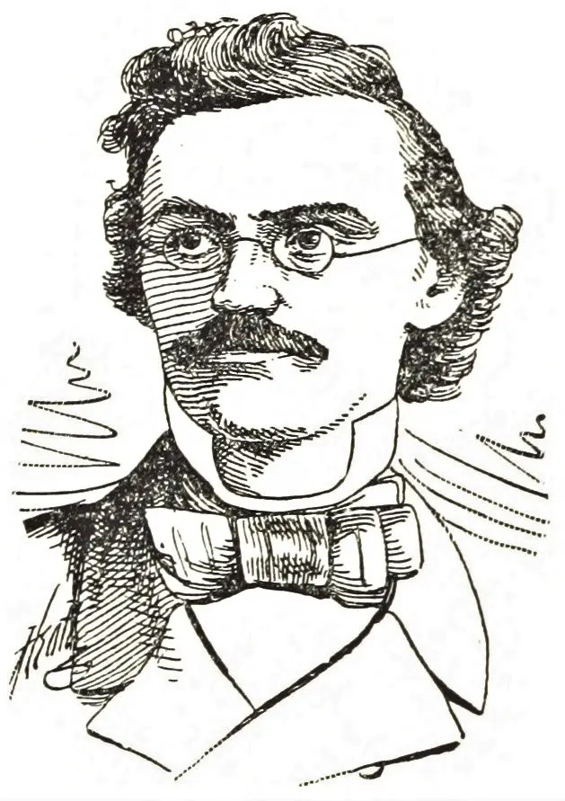
Irish voters
Irish voters became the base of Democratic city machines, trading votes for jobs and help
Democrats
Democrats opposed Protestant reform laws on drinking and Sunday leisure that targeted immigrants
German Forty-Eighters
Many German Forty-Eighters opposed slavery and became Republicans, like Carl Schurz
Common ground
Both groups organized against nativist laws
Independent Study · The Irish
The Irish Fled Starvation
The famine is why there are more people of Irish descent in the United States today than in Ireland.
Where they settled
Most arrived poor and Catholic, and stayed in port cities, taking hard, low-paid jobs
Rivals for work
Many competed with free Black workers for the same jobs, and many opposed abolition
Independent Study · The Germans
Germans Built Communities in the Midwest and Texas
- German immigrants were Catholic, Lutheran, and Jewish, and came from many walks of life
- Many had money or skills and bought farms in Wisconsin, Missouri, and Ohio, and also in Texas
- They kept their language, newspapers, and customs, which nativists distrusted
Beer gardens on Sunday clashed with strict Protestant "Sabbath" laws
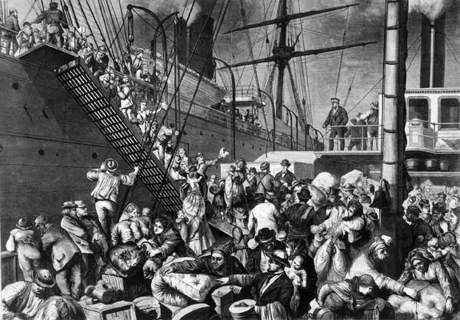
Independent Study · The Philadelphia riots, 1844
Anti-Catholic Riots Burned Philadelphia's Churches
- Catholic parents objected to Protestant Bible readings in public schools
- Nativists claimed Catholics wanted to throw the Bible out of the schools
- May and July 1844: mobs burned two Catholic churches and fought soldiers in the streets
About 20 people died; Catholics began building their own parochial schools
Riot in Philadelphia, June [i.e. July] 7th 1844. Lithograph by H. Bucholzer, 1844. Library of Congress, via Wikimedia Commons (public domain).
Independent Study · Why nativism faded
Why the Know-Nothings Faded So Fast
- The party peaked in 1854–1855, then split over slavery
- 1855–1856: Southern members demanded support for the Kansas-Nebraska Act; many Northerners walked out
- Fillmore won only Maryland in 1856
- Most Northern Know-Nothings joined the Republicans, who quietly absorbed some nativist voters
In the North, the fear of the Slave Power proved stronger than the fear of immigrants.
Sources
Primary sources
- Kansas-Nebraska Act, May 30, 1854, 10 Stat. 277 (Avalon Project, Yale Law School).
- Missouri Compromise, March 6, 1820, 3 Stat. 545, section 8.
- Franklin Pierce, special message to Congress on Kansas, January 24, 1856 (American Presidency Project).
- Charles Sumner, "The Crime Against Kansas," U.S. Senate, May 19–20, 1856.
- Republican and American (Know-Nothing) Party platforms of 1856 (American Presidency Project).
- U.S. Census Office, Population of the United States in 1860 (1864), nativity tables.
- Illustrated London News, December 22, 1849; Reynolds's Political Map of the United States (1856).
Scholarship and references
- David M. Potter, The Impending Crisis, 1848–1861 (1976).
- James M. McPherson, Battle Cry of Freedom (1988), chs. 4–5.
- Eric Foner, Free Soil, Free Labor, Free Men (1970).
- Michael F. Holt, The Rise and Fall of the American Whig Party (1999).
- Tyler Anbinder, Nativism and Slavery: The Northern Know Nothings and the Politics of the 1850s (1992).
- Nicole Etcheson, Bleeding Kansas: Contested Liberty in the Civil War Era (2004).
- Dale E. Watts, "How Bloody Was Bleeding Kansas? Political Killings in Kansas Territory, 1854–1861," Kansas History 18 (1995).
- Williamjames Hull Hoffer, The Caning of Charles Sumner (2010).
- Kerby A. Miller, Emigrants and Exiles: Ireland and the Irish Exodus to North America (1985).
- Michael Feldberg, The Philadelphia Riots of 1844 (1975).
Images
- Period images are in the public domain (Library of Congress, Boston Public Library, Harvard University Portrait Collection, Illustrated London News, British Library), via Wikimedia Commons, except the 1898 Schurz drawing, which is a later public-domain illustration. The 1856 election map was drawn for this lecture from Burnham's results and U.S. Census Bureau boundaries (public domain). Each slide's caption gives its source.
Short documentary
- "The Pottawatomie Massacre: A True Story," Seek Learning (1:33). youtu.be/H4nq7BJ4OkA